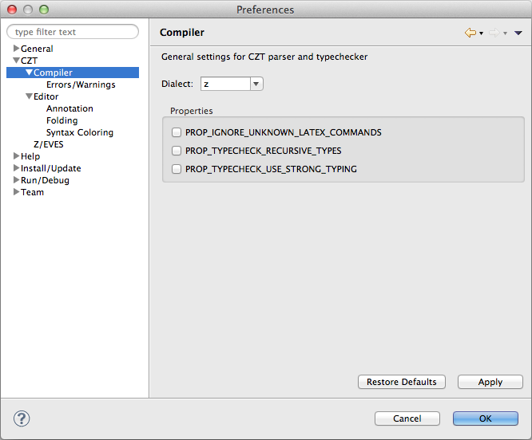

The CZT > Compiler preference page allows configuring the various properties of the section manager for parsing and typechecking of Z specifications.

Use the Dialect field to select the Z dialect to use within CZT Eclipse. This dialect will be used for all open files.
Note: reload all open editors after changing the dialect to trigger parsing with the new dialect.
The following properties can be set in this page: